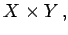
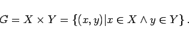
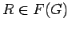
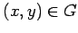
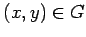

Inhalt Index DeskTop Bronstein

 Algebra und Diskrete Mathematik Fuzzy-Logik Fuzzy-wertige Relationen Fuzzy-Relationen
Algebra und Diskrete Mathematik Fuzzy-Logik Fuzzy-wertige Relationen Fuzzy-Relationen


Seien X und Y Fuzzy-Grundmengen, so repräsentiert das ,,Kreuzprodukt``  auch kartesisches Produkt genannt, im Grundbereich G eine Fuzzy-Menge:
|  | (5.389) |
Die Fuzzy-Menge wird dann in Analogie zur klassischen Mengenlehre zu einer Fuzzy-Relation, weil sie die Elemente aus den Grundmengen paarweise in Beziehung setzt. Eine unscharfe Relation R in G ist eine unscharfe Teilmenge , wobei F(G) die Gesamtheit aller unscharfen Mengen über X x Y bezeichnet. R läßt sich durch eine Zugehörigkeitsfunktion  beschreiben, die jedem Element  den Zugehörigkeitsgrad
beschreiben, die jedem Element  den Zugehörigkeitsgrad  aus [0,1] zuordnet.
aus [0,1] zuordnet.